Core · Video walkthrough
Create and maintain useful contact categories, people and organizations
Create a category, save a person and an organization, verify reference-location and copied-address fields, combine filters, and read back a saved phone change.
Before you begin
- Use your department Contacts permissions and a fictional practice directory.
- Prepare reserved training contact channels and a clearly fictional address/location pair.
Chapters
- Choose the directory and its categories
- Create and verify a useful category
- Prepare a person and a clear description
- Find and inspect the saved person
- Add a separate organization
- Enter an explicit reference point and address
- Combine the category and text filters
- Verify location and copied address on the owning forms
- Verify a small saved change
- Review the finished directory and adapt it
Watch the walkthrough
Step 1
Choose the directory and its categories
Contacts gives your department a shared directory of people, organizations, and locations. Keep member accounts and roster roles in Personnel; use this directory for useful operational references. In our fictional Chicago Fire training department, we are in Contacts, on the Categories page. The category table separates its name, description, color, and contact count. It starts empty here, even though the department already has uncategorized contacts. We will create a small partner directory and verify each saved entry.

Practice
Find the category table and identify its contact-count column before adding an entry.
Step 2
Create and verify a useful category
Choose Add Category. Enter Academy Partner Directory as the Name and describe it as fictional training partners and logistics contacts. Keep the blue color so the category is easy to recognize. Display On Map remains unchecked and Map Icon stays Default. Those controls are separate from organizing the directory. Save, then read the returned category row. Its name, description, and blue color are present, while Contacts In Category is zero. That saved row is our starting point for adding contacts.
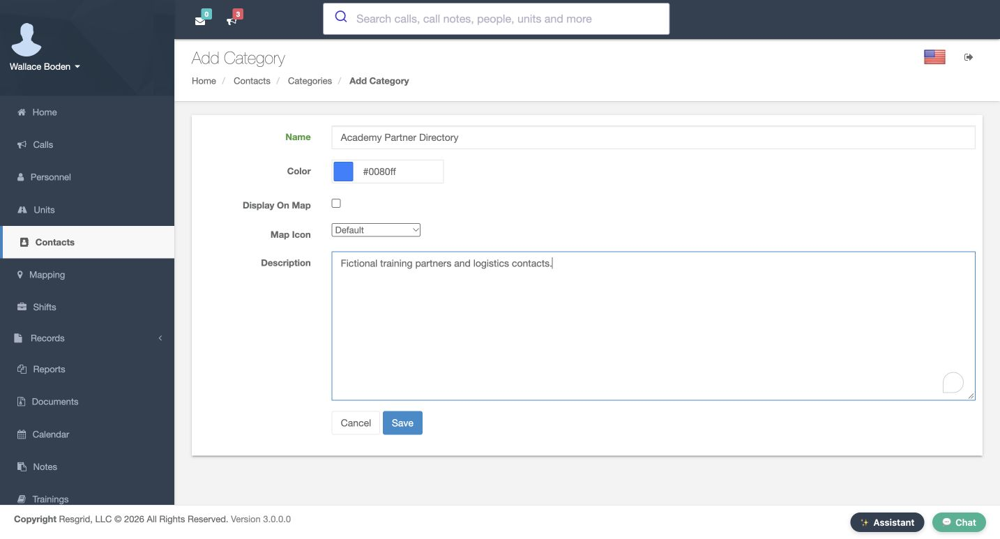
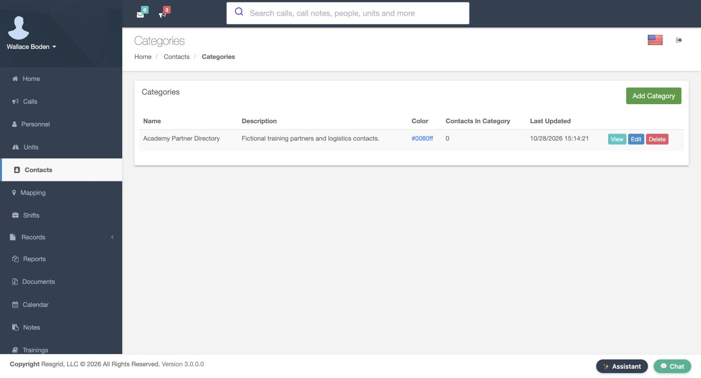
Practice
Save a fictional partner category with map display off, then verify its name and zero contact count.
Step 3
Prepare a person and a clear description
On the Add Contact form, select Person, then Academy Partner Directory. Enter Sylvie and Brett in the first and last name fields. The organization field can add context; here it contains Academy Community Partners, marked fictional. Email Address and Cell Phone hold deliberately reserved training values. Scroll to Description and explain the purpose of the entry. Our text identifies a fictional community partner liaison and asks the reader to verify current details before operational use. Keep that description useful and specific.
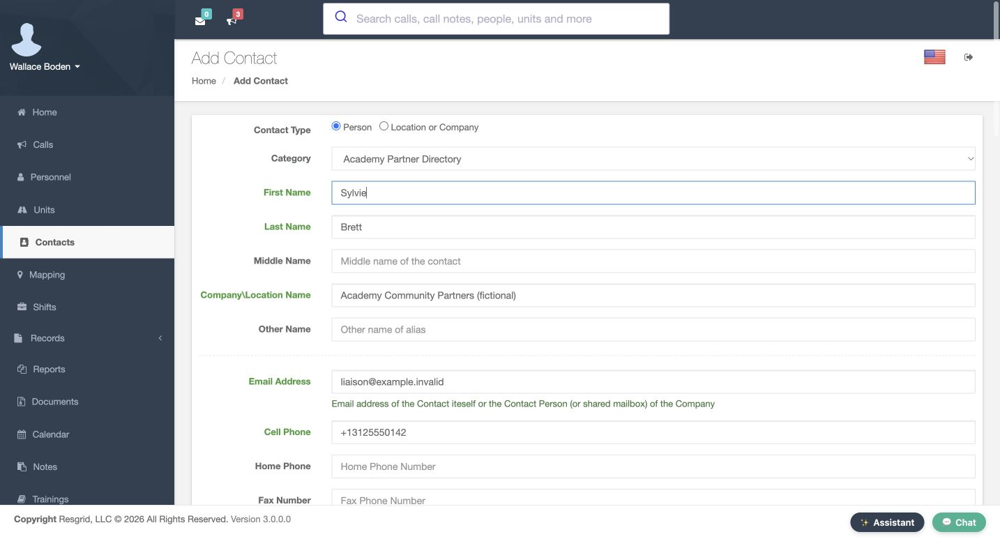
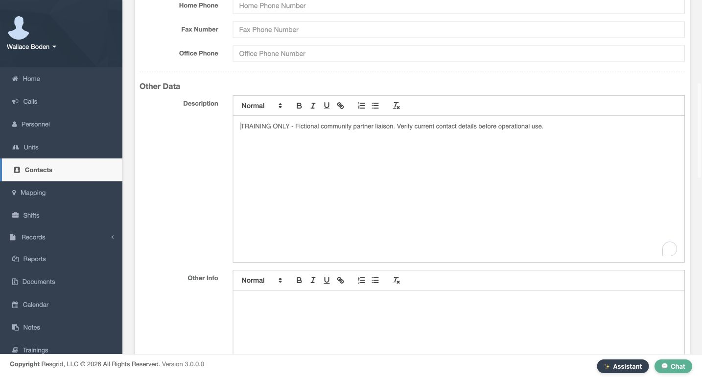
Practice
Prepare a fictional Person entry with first and last names, the intended category and a useful operational description.
Step 4
Find and inspect the saved person
After saving the person, use the Contacts table Search field to enter Brett. The result shows Sylvie Brett, the Person type, and the named category. Choose View and check the saved name and training contact channels. Scroll down to read the complete Description again. These separate checks confirm that both the identity and the useful context were stored. To verify category membership, use the named category in the list or the edit form; the Additional Info category value on this View is numeric.
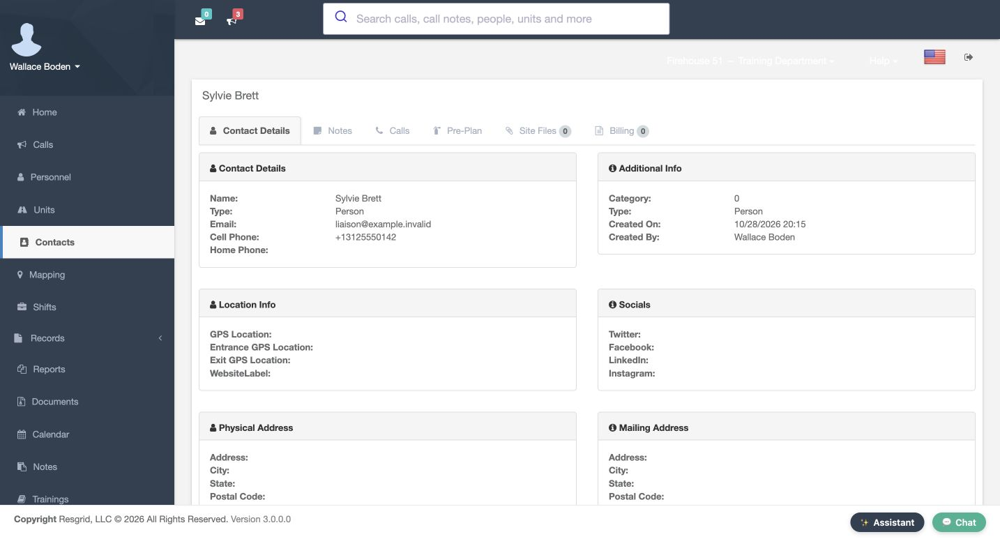
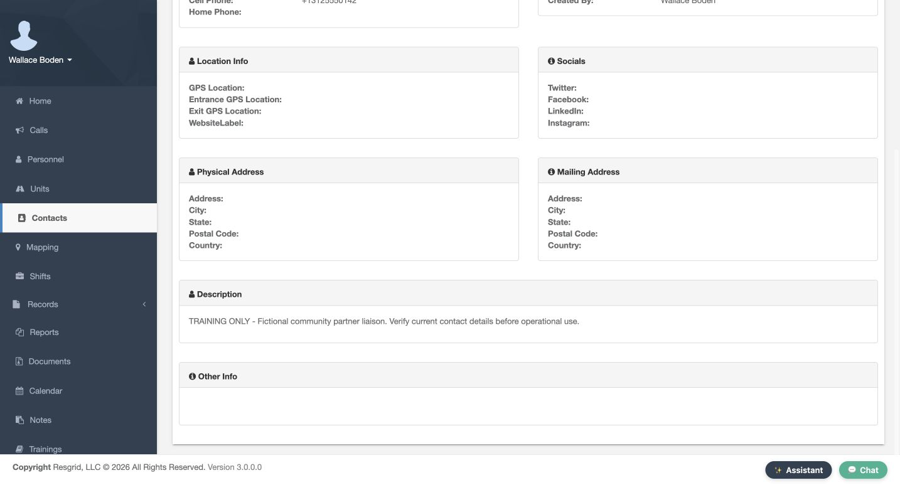
Practice
Search for the saved person, open View and verify the saved channels and complete description.
Step 5
Add a separate organization
Create a second entry using Location or Company. Keep the same category, leave the person name fields empty, and enter Academy Logistics Desk, marked fictional, in Company Location Name. The organization has its own reserved training email and an Office Phone ending in zero one four three. Its Description explains that it is a fictional supply and mutual-aid coordination contact. Using the appropriate contact type and phone field makes the directory easier to understand when someone else opens the entry.
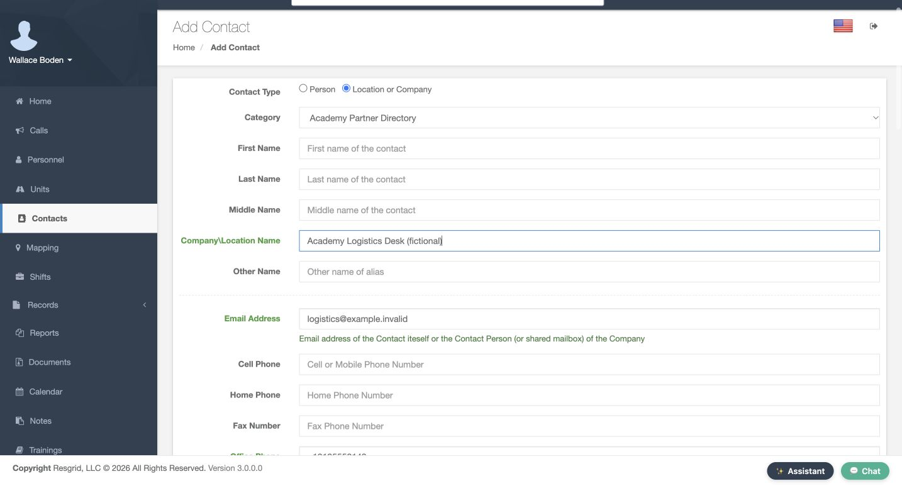
Practice
Prepare a Location or Company entry with a clear organization name and a reserved office phone.
Step 6
Enter an explicit reference point and address
In Location Info, GPS Location has a latitude field and a longitude field. Enter the complete fictional Chicago pair together. Entrance GPS Location and Exit GPS Location are separate pairs and stay blank in this exercise. Continue to Physical Address and enter the fictional Training Avenue street, Chicago, Illinois, and postal code. Check Same as Physical under Mailing Address, then use Save at the bottom of the form. These are stored directory reference values; entering coordinates does not establish a device position, a verified entrance, or a successful route.
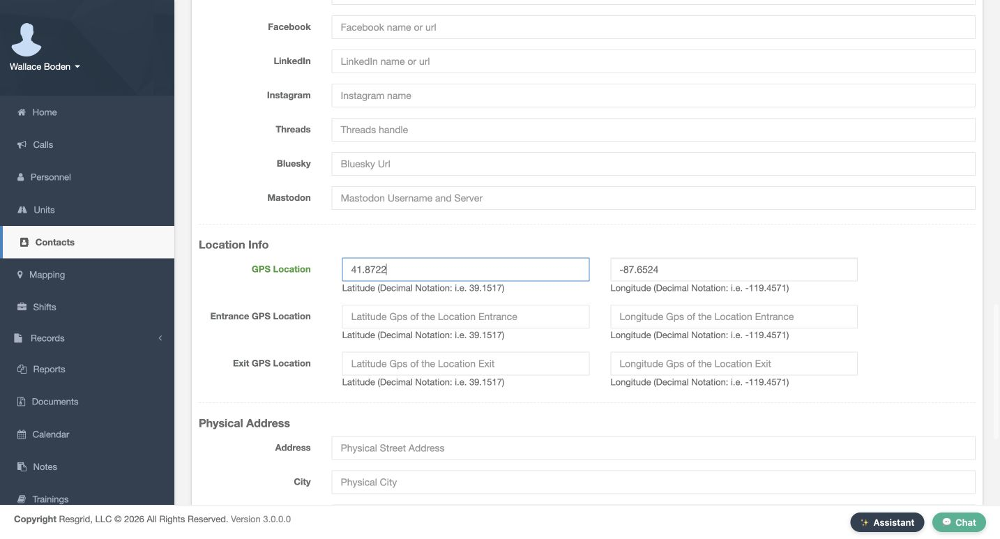
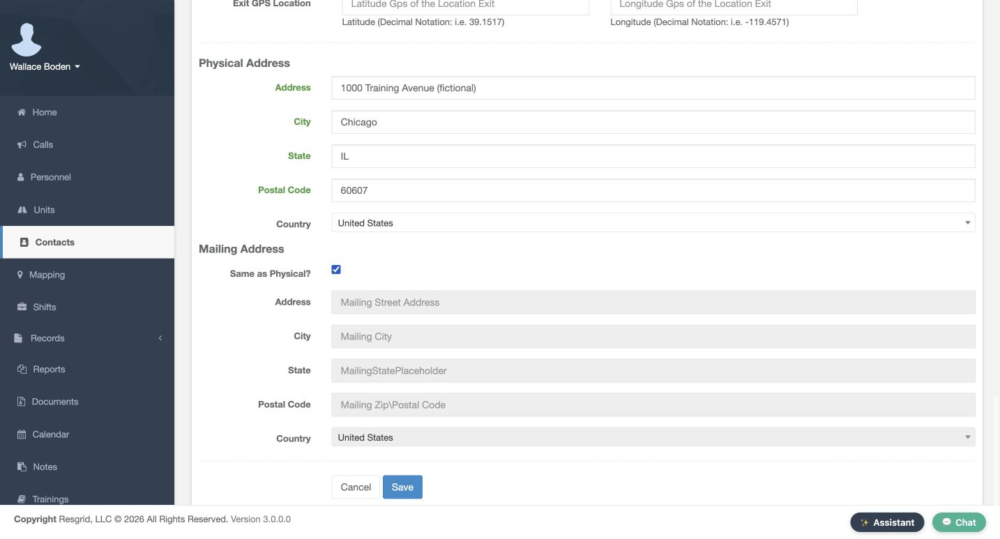
Practice
Save a fictional paired reference location and address with Same as Physical selected; keep entrance and exit pairs blank.
Step 7
Combine the category and text filters
Back in Contacts, select Academy Partner Directory in the category tree. Both newly saved entries appear: the person and the logistics organization. Now enter Logistics in Search. The table narrows the selected category to the organization, and the count says that one result is filtered from two entries. Read the name and type before choosing View or Edit. A short list can reflect the combination of these filters, so check the selected category and search text before deciding that an entry is missing.
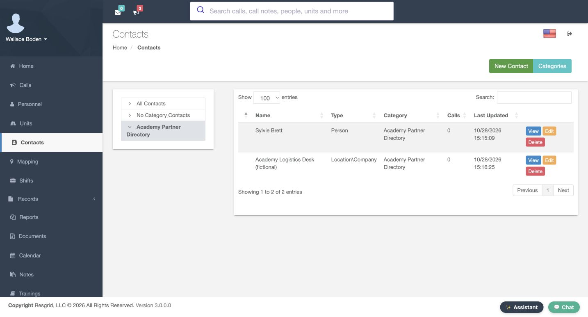
Practice
Select the category, search for the organization, then clear the text search and confirm both entries return.
Step 8
Verify location and copied address on the owning forms
Open the saved organization. Contact Details shows its name and email, and Location Info shows the stored coordinate pair. Farther down, verify the physical address and original Description. For the named category and copied mailing address, return to the list and choose Edit. The category is selected by name, and the reopened mailing fields contain the copied street, city, state, and postal code. Same as Physical is clear on reopening here. Check those actual fields rather than assuming the blank mailing section on View proves that nothing was saved.
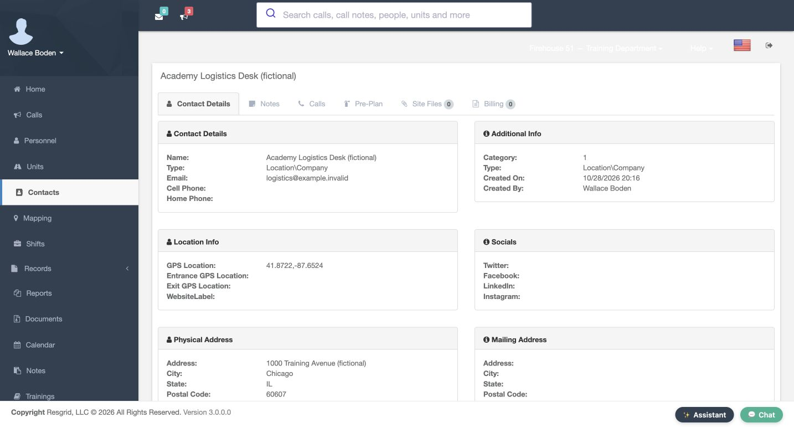
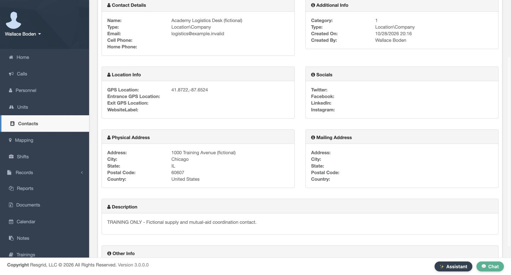
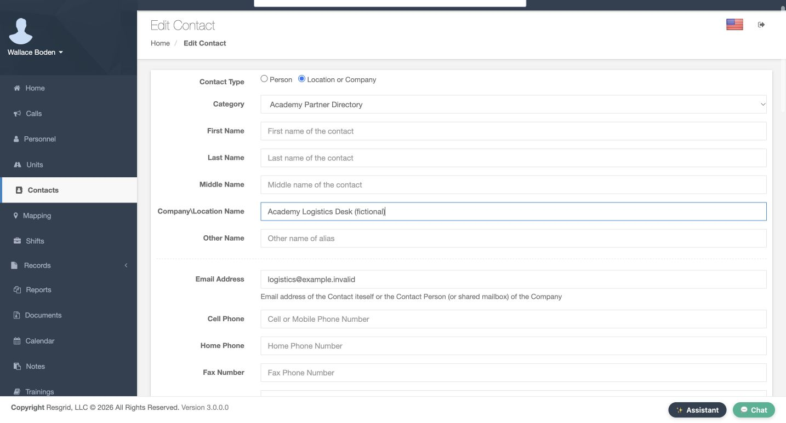
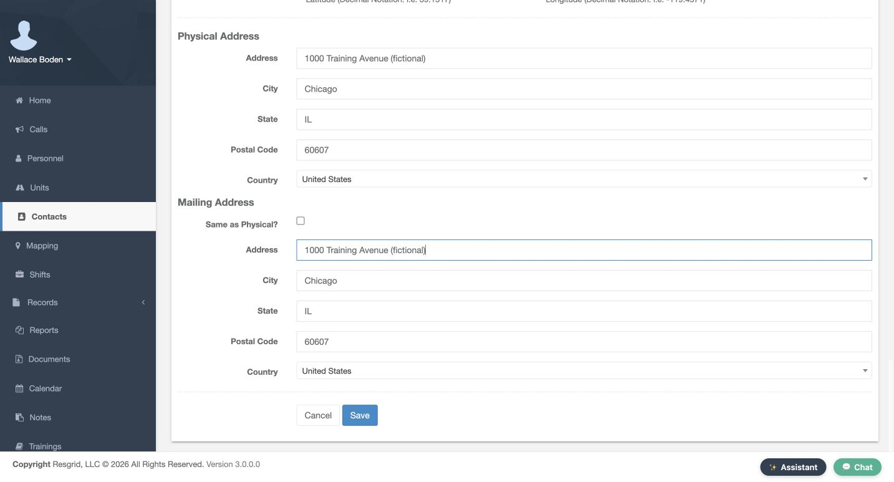
Practice
Reopen Edit and verify the named category and copied mailing fields on that form.
Step 9
Verify a small saved change
Use a small, easy-to-check edit to confirm your maintenance workflow. In the reopened organization form, Office Phone ends in zero one four three. Change that final digit to four. After saving and reopening the same contact, the field now ends in zero one four four. Read the reopened value, not just the value you typed. The original supply and mutual-aid Description remains in place. A successful change to one field is a reason to verify that field specifically, rather than assume every attempted edit was stored.
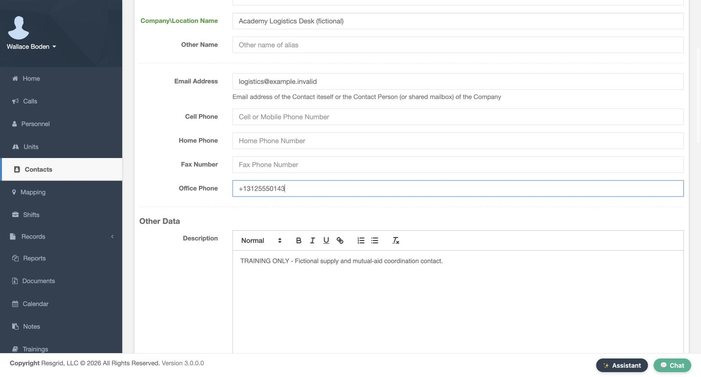
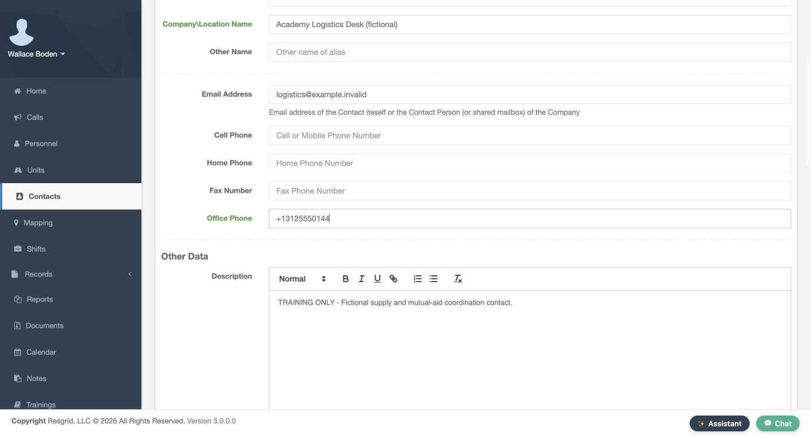
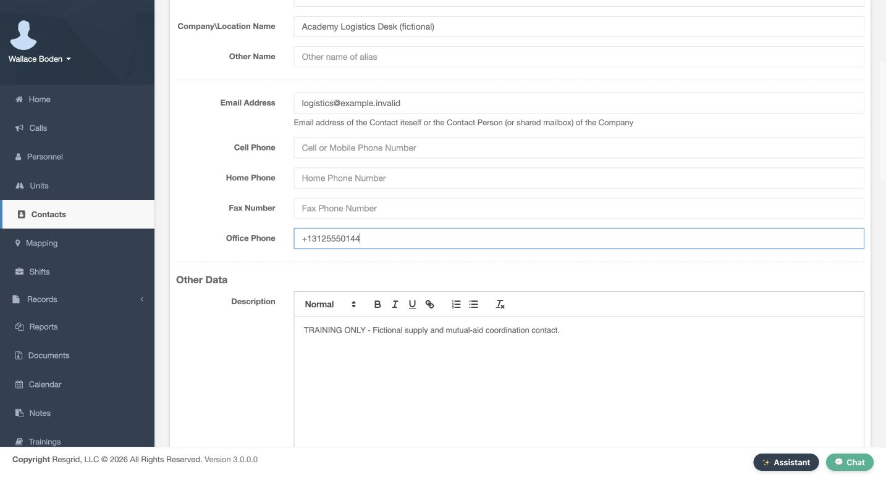
Practice
Change the reserved office phone on your fictional organization, save, leave and reopen to verify the new final digit.
Step 10
Review the finished directory and adapt it
Finish in Categories. Academy Partner Directory now contains two contacts. Give someone responsibility for reviewing those details as partners change. Chicago Fire can use this pattern for logistics contacts. Community care and mental health teams can maintain operational partner directories without patient detail. Search and rescue can organize staging and support contacts; security teams can group site contacts; wildland crews can maintain supply references; and industrial response teams can organize facility coordination contacts. In each setting, choose clear categories, verify saved values, and keep the directory current.
Practice
Verify the category contains both practice contacts and choose who will review the directory before the next exercise.
Examples for your department
- Fire / EMS
- Maintain fictional logistics and mutual-aid coordination contacts in a reviewed category.
- Community response
- Organize operational partners and outreach references without patient or clinical details.
- Search and rescue
- Group staging, equipment and support contacts; a saved directory point is not an arrival report.
- Security
- Group site and coordination contacts without real client information in a training environment.
- Wildland
- Keep supply and assignment support contacts current; verify changes before the next exercise.
- Industrial
- Organize facility coordination and equipment-support contacts with a responsible directory owner.
Transcript
Download transcriptRead the complete transcript
Create and maintain useful contact categories, people and organizations Audience: department administrators, dispatchers maintaining an operational directory Choose the directory and its categories Contacts gives your department a shared directory of people, organizations, and locations. Keep member accounts and roster roles in Personnel; use this directory for useful operational references. In our fictional Chicago Fire training department, we are in Contacts, on the Categories page. The category table separates its name, description, color, and contact count. It starts empty here, even though the department already has uncategorized contacts. We will create a small partner directory and verify each saved entry. Practice: Find the category table and identify its contact-count column before adding an entry. Create and verify a useful category Choose Add Category. Enter Academy Partner Directory as the Name and describe it as fictional training partners and logistics contacts. Keep the blue color so the category is easy to recognize. Display On Map remains unchecked and Map Icon stays Default. Those controls are separate from organizing the directory. Save, then read the returned category row. Its name, description, and blue color are present, while Contacts In Category is zero. That saved row is our starting point for adding contacts. Practice: Save a fictional partner category with map display off, then verify its name and zero contact count. Prepare a person and a clear description On the Add Contact form, select Person, then Academy Partner Directory. Enter Sylvie and Brett in the first and last name fields. The organization field can add context; here it contains Academy Community Partners, marked fictional. Email Address and Cell Phone hold deliberately reserved training values. Scroll to Description and explain the purpose of the entry. Our text identifies a fictional community partner liaison and asks the reader to verify current details before operational use. Keep that description useful and specific. Practice: Prepare a fictional Person entry with first and last names, the intended category and a useful operational description. Find and inspect the saved person After saving the person, use the Contacts table Search field to enter Brett. The result shows Sylvie Brett, the Person type, and the named category. Choose View and check the saved name and training contact channels. Scroll down to read the complete Description again. These separate checks confirm that both the identity and the useful context were stored. To verify category membership, use the named category in the list or the edit form; the Additional Info category value on this View is numeric. Practice: Search for the saved person, open View and verify the saved channels and complete description. Add a separate organization Create a second entry using Location or Company. Keep the same category, leave the person name fields empty, and enter Academy Logistics Desk, marked fictional, in Company Location Name. The organization has its own reserved training email and an Office Phone ending in zero one four three. Its Description explains that it is a fictional supply and mutual-aid coordination contact. Using the appropriate contact type and phone field makes the directory easier to understand when someone else opens the entry. Practice: Prepare a Location or Company entry with a clear organization name and a reserved office phone. Enter an explicit reference point and address In Location Info, GPS Location has a latitude field and a longitude field. Enter the complete fictional Chicago pair together. Entrance GPS Location and Exit GPS Location are separate pairs and stay blank in this exercise. Continue to Physical Address and enter the fictional Training Avenue street, Chicago, Illinois, and postal code. Check Same as Physical under Mailing Address, then use Save at the bottom of the form. These are stored directory reference values; entering coordinates does not establish a device position, a verified entrance, or a successful route. Practice: Save a fictional paired reference location and address with Same as Physical selected; keep entrance and exit pairs blank. Combine the category and text filters Back in Contacts, select Academy Partner Directory in the category tree. Both newly saved entries appear: the person and the logistics organization. Now enter Logistics in Search. The table narrows the selected category to the organization, and the count says that one result is filtered from two entries. Read the name and type before choosing View or Edit. A short list can reflect the combination of these filters, so check the selected category and search text before deciding that an entry is missing. Practice: Select the category, search for the organization, then clear the text search and confirm both entries return. Verify location and copied address on the owning forms Open the saved organization. Contact Details shows its name and email, and Location Info shows the stored coordinate pair. Farther down, verify the physical address and original Description. For the named category and copied mailing address, return to the list and choose Edit. The category is selected by name, and the reopened mailing fields contain the copied street, city, state, and postal code. Same as Physical is clear on reopening here. Check those actual fields rather than assuming the blank mailing section on View proves that nothing was saved. Practice: Reopen Edit and verify the named category and copied mailing fields on that form. Verify a small saved change Use a small, easy-to-check edit to confirm your maintenance workflow. In the reopened organization form, Office Phone ends in zero one four three. Change that final digit to four. After saving and reopening the same contact, the field now ends in zero one four four. Read the reopened value, not just the value you typed. The original supply and mutual-aid Description remains in place. A successful change to one field is a reason to verify that field specifically, rather than assume every attempted edit was stored. Practice: Change the reserved office phone on your fictional organization, save, leave and reopen to verify the new final digit. Review the finished directory and adapt it Finish in Categories. Academy Partner Directory now contains two contacts. Give someone responsibility for reviewing those details as partners change. Chicago Fire can use this pattern for logistics contacts. Community care and mental health teams can maintain operational partner directories without patient detail. Search and rescue can organize staging and support contacts; security teams can group site contacts; wildland crews can maintain supply references; and industrial response teams can organize facility coordination contacts. In each setting, choose clear categories, verify saved values, and keep the directory current. Practice: Verify the category contains both practice contacts and choose who will review the directory before the next exercise. Examples for your department Fire / EMS: Maintain fictional logistics and mutual-aid coordination contacts in a reviewed category. Community response: Organize operational partners and outreach references without patient or clinical details. Search and rescue: Group staging, equipment and support contacts; a saved directory point is not an arrival report. Security: Group site and coordination contacts without real client information in a training environment. Wildland: Keep supply and assignment support contacts current; verify changes before the next exercise. Industrial: Organize facility coordination and equipment-support contacts with a responsible directory owner.